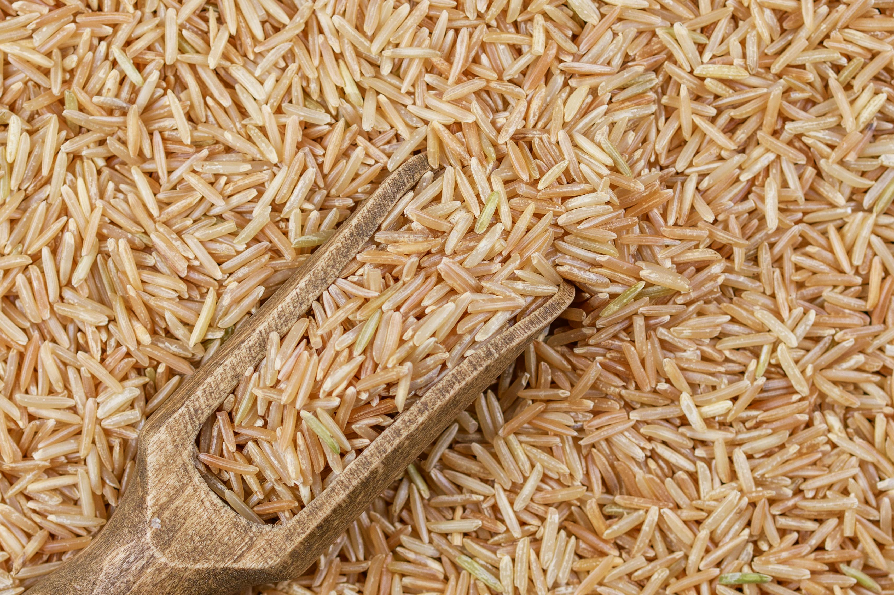
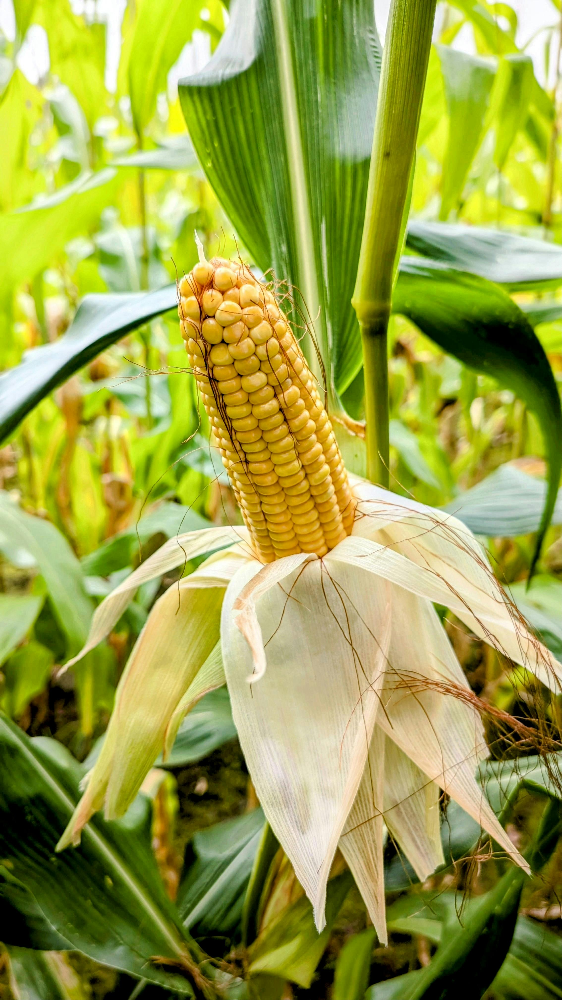

🌾 Crop Varieties
Major agricultural crops and their real-world importance.

Wheat
Rabi cereal crop grown in temperate regions.

Rice
Major Kharif crop requiring flooded fields.

Maize (Corn)
Grown in both Kharif and Rabi seasons.

Vegetables
Grown in both Rabi and Kharif seasons.

Fruits
Seasonal and perennial fruit crops.

Cotton
Kharif fiber crop known as “White Gold”.